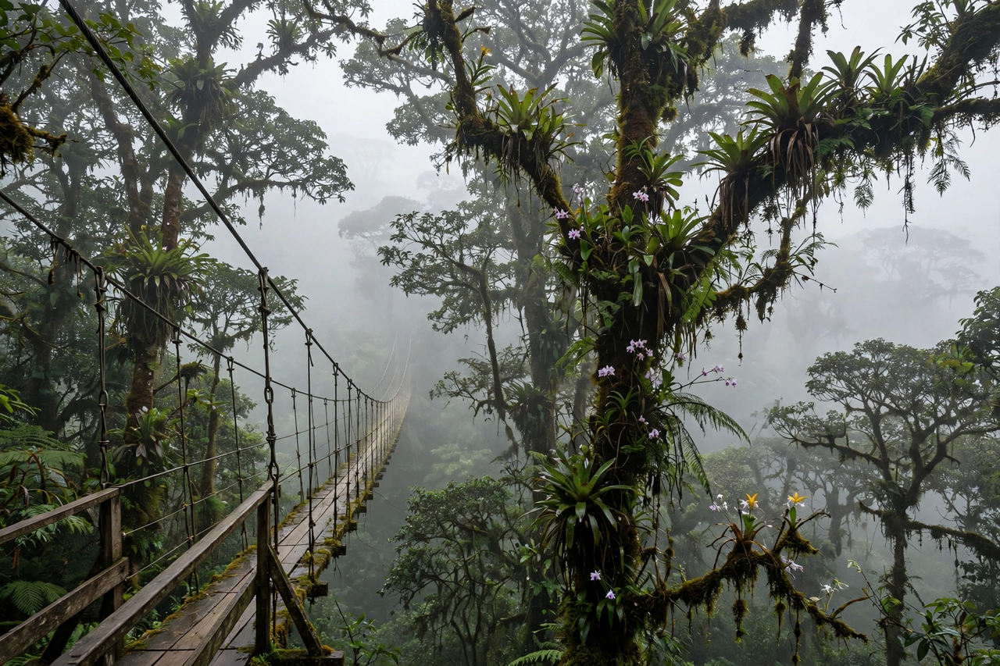

| Monteverde | |
|---|---|
 | |
| Country | Costa Rica |
| Province | Puntarenas |
| Elevation | Approx. 1,330–1,500 m (4,360–4,920 ft) |
| Known for | Cloud forest reserves, ecotourism, Quaker settlement |
Monteverde is a small community in the mountainous north-west of Costa Rica, in the Cordillera de Tilarán of Puntarenas Province. It is famous internationally for its cloud forest reserves — among the most biodiverse and best-studied tropical montane forests on Earth — and is a major destination for ecotourism and scientific research. The name is also often used for the surrounding area including the neighbouring town of Santa Elena.
The modern settlement of Monteverde was founded in 1951 by a group of Quakers from Alabama, United States, who had been imprisoned for refusing the Korean War-era military draft and chose Costa Rica in part because the country had abolished its army in 1948. The families bought land on the mountain, named it Monteverde ("Green Mountain"), and set aside a portion of their holdings as a watershed reserve — a forest tract that became the nucleus of the area's conservation movement. The settlers developed dairy farming; their cheese factory remains a local institution.
The Monteverde Cloud Forest Biological Preserve, founded in 1972 under the Tropical Science Center, protects over 10,500 hectares of forest. Neighbouring reserves include the Santa Elena Cloud Forest Reserve and the Children's Eternal Rainforest (Bosque Eterno de los Niños), the largest private reserve in Costa Rica, begun with fundraising by Swedish schoolchildren. The forests straddle the continental divide at elevations around 1,500 metres, where trade winds force moist air upward, bathing the forest in persistent cloud and mist.
Monteverde's reserves contain an extraordinary concentration of species: more than 400 bird species (including the resplendent quetzal and the three-wattled bellbird), over 100 mammal species (including jaguars, ocelots and Baird's tapir), thousands of insect species and some 2,500–3,000 plant species, including hundreds of orchids and epiphytes. Monteverde was also the type locality of the golden toad (Incilius periglenes), an endemic species last seen in 1989 and considered an early emblem of the global amphibian decline crisis, often linked in research to a warming, drying cloud base.
Tens of thousands of visitors come annually for canopy walkways and zip-lines (pioneered in the area), night walks, birdwatching and coffee and chocolate tours. The Monteverde Institute and numerous research stations host biologists and students from around the world.